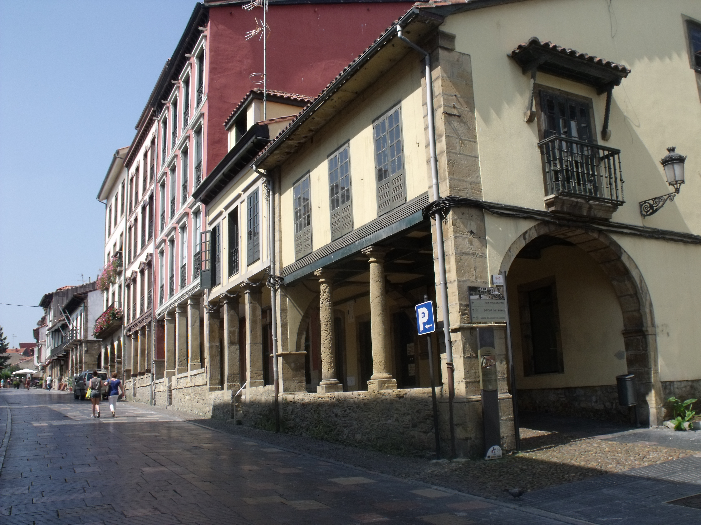
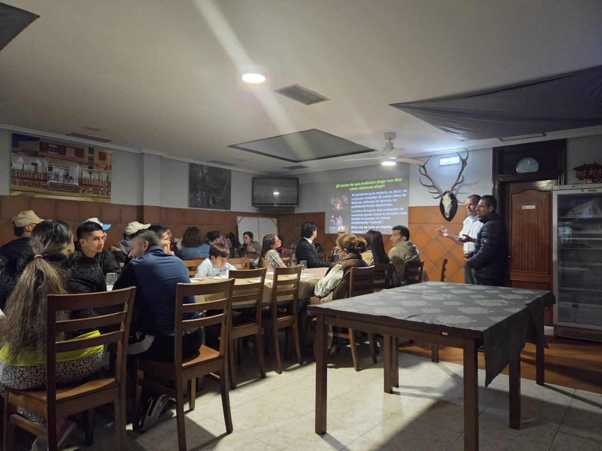
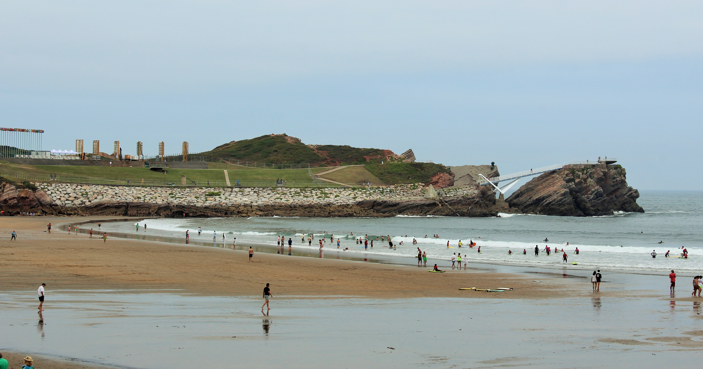
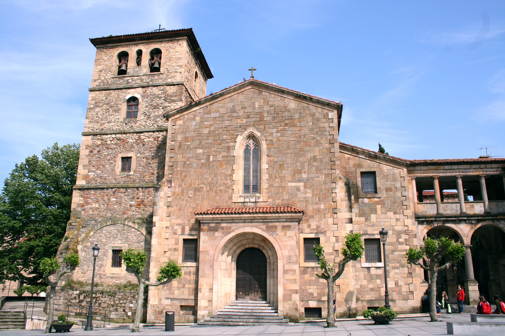

Volver a la Palabra
Buscamos conocer a Dios a través de la Biblia, leerla en su contexto y seguir las enseñanzas de Jesús y sus apóstoles.
2 Timoteo 3:16–17
AVILÉS · ASTURIAS · ESPAÑA
Conocer a Jesús. Compartir la vida.
Un lugar para crecer en la fe, aquí en Avilés.
Nos reunimos los domingos de 12:00 a 13:00 en el Centro Empresarial La Curtidora, Camino La Curtidora, 1, Avilés.
Ver información →BIENVENIDOS · WELCOME

La fe comienza con una invitación: acercarnos a Jesús y aprender a vivir como Él.
Somos cristianos en Avilés que buscamos seguir «el Camino» de Jesucristo y las enseñanzas y la práctica de la iglesia del primer siglo, tal como se recogen en el Nuevo Testamento. La Biblia es nuestra guía y Jesús, el centro de nuestra fe. Seas de aquí, hayas llegado hace poco o estés de paso, eres bienvenido.
«…según el Camino que ellos llaman herejía, así sirvo al Dios de mis padres…»
Hechos 24:14 · RVR1960 (fragmento) ↗
Pablo, ante el gobernador Félix, vincula su adoración a Dios con seguir el Camino. Véase también Hechos 9:2 ↗.
LO QUE NOS UNE
Una fe que se aprende, se comparte
y se vive cada día.
Buscamos conocer a Dios a través de la Biblia, leerla en su contexto y seguir las enseñanzas de Jesús y sus apóstoles.
2 Timoteo 3:16–17Nuestra propuesta es reunirnos para orar, cantar a cappella, escuchar la Palabra y compartir la Cena del Señor cada domingo.
Pasajes que guían nuestra adoración ↗Creemos en responder al evangelio con fe, arrepentimiento y bautismo por inmersión, y en cuidar de nuestros vecinos con amor.
Hechos 2:38 · Juan 13:34–35Nuestra identidad: cristianos que buscamos seguir el Camino de Jesucristo y el ejemplo de la iglesia del primer siglo que recoge el Nuevo Testamento.
ADORAR SEGÚN EL NUEVO TESTAMENTO
Jesús nos enseña a adorar al Padre en espíritu y en verdad. Sus enseñanzas y el ejemplo de la iglesia del primer siglo guían nuestra adoración juntos en Avilés.
Los primeros cristianos perseveraban en la enseñanza de los apóstoles y en la comunión. Leemos y estudiamos juntos la Biblia para que su mensaje guíe nuestra fe y nuestra vida diaria.
La oración formaba parte de la vida de la iglesia del primer siglo. Presentamos nuestras necesidades a Dios, damos gracias y oramos unos por otros, buscando una vida de oración constante.
Cantamos juntos a cappella, sin instrumentos. Así buscamos seguir el llamado del Nuevo Testamento a enseñarnos y animarnos unos a otros con salmos, himnos y cánticos espirituales, cantando a Dios de corazón.
Nuestra práctica de compartir la Cena del Señor cada domingo sigue el ejemplo de la reunión del primer día de la semana en Hechos 20:7. Con el pan y la copa recordamos el sacrificio de Jesús, anunciamos su muerte y nos examinamos, como enseñó Pablo.
Pablo enseñó a los cristianos a apartar una ofrenda el primer día de la semana para ayudar a creyentes necesitados. Su enseñanza guía nuestra ofrenda: con propósito, generosidad y libertad, sin presión. No se espera que los visitantes contribuyan.
Nos reunimos para animarnos al amor y a las buenas obras. Buscamos que la adoración edifique a la congregación y que todo se haga con respeto y orden.
Selecciona una referencia bíblica para leer el pasaje completo.
TU PRIMERA VISITA
No necesitas saber todas las respuestas para comenzar. Queremos que tu primera visita sea sencilla, cercana y sin presión.
Información para venir ↗Lectura de la Biblia, oración, canto congregacional sin instrumentos y una reflexión para la vida cotidiana.
La Cena del Señor ocupa un lugar central: pan y fruto de la vid para recordar a Jesús y su entrega.
Puedes escuchar, hacer preguntas y conocer la fe cristiana a tu ritmo. No se espera ninguna aportación económica de los visitantes.
«Venid a mí todos los que estáis trabajados y cargados, y yo os haré descansar.»Mateo 11:28 · Reina-Valera 1909
ARRAIGADOS EN ASTURIAS
Entre las calles de Avilés y el Cantábrico,
una invitación a compartir la vida.


Imagen de patrimonio católico local. No es nuestro lugar de reunión ni representa nuestra afiliación.
ANTES DE VENIR
Somos cristianos que buscamos seguir el Camino de Jesucristo y las enseñanzas y la práctica de la iglesia del primer siglo que recoge el Nuevo Testamento. Cada congregación es autónoma. Respetamos a nuestros vecinos de otras tradiciones y buscamos seguir el Nuevo Testamento.
Sí. No hace falta tener experiencia previa ni ser miembro. Queremos ofrecer un espacio para escuchar, aprender y hacer preguntas con respeto.
Nos reunimos los domingos de 12:00 a 13:00 (hora local de Avilés) en la sala de reuniones del Centro Empresarial La Curtidora, Camino La Curtidora, 1, 33402 Avilés, Asturias. Puedes llamarnos al +34 602 59 45 41 o escribir a idcaviles.es@gmail.com. Las fotografías de iglesias históricas de la región no muestran nuestro lugar de reunión.
Sí. Selecciona EN en la parte superior de esta página para ver la información en inglés. Ponte en contacto con nosotros para consultar el idioma de las reuniones y las posibilidades de interpretación.
NOS ENCONTRAMOS EN AVILÉS
Ven a conocernos al Centro Empresarial La Curtidora.
Nos reunimos cada domingo de 12:00 a 13:00.
Camino La Curtidora, 1
33402 Avilés, Asturias, España
Centro Empresarial La Curtidora · sala de reuniones
Domingos · 12:00–13:00
Hora local de Avilés
Nos reunimos en la sala de reuniones del Centro Empresarial La Curtidora.